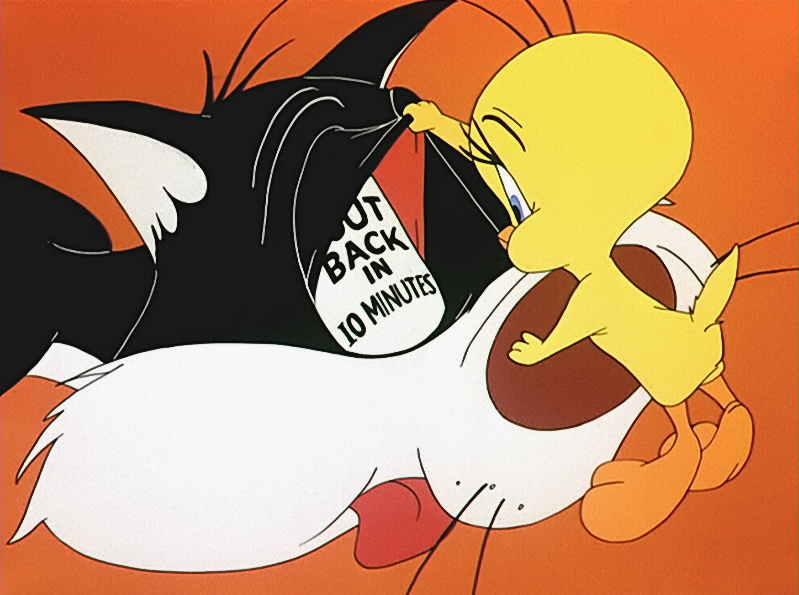

About Sylvester
Sylvester shows a lot of pride in himself and never gives up. The name "Sylvester" is a play on Felis silvestris, the scientific name for the wild cat species (domestic cats like Sylvester are in the subspecies Felis silvestris catus). Sylvester's trademark is his sloppy and yet stridulating lisp. He shows a different personality when paired with Porky Pig in explorations of spooky places, in which he does not speak, behaves as a scaredy-cat, and always seems to see the scary things Porky does not see and gets scolded by him for it every time.
Most of his appearances have him often chasing Tweety.
Information abut Sylvester the Cat
- Full name: Sylvester Jackson Pussycat
- Children: Sylvester Jr. (son)
- Species: Cat
- Gender: Male
- Nationality:American
Cameo appearances
Sylvester the cat has had a few cameo appearances in movies. Click on the links below to read more about the cameos.